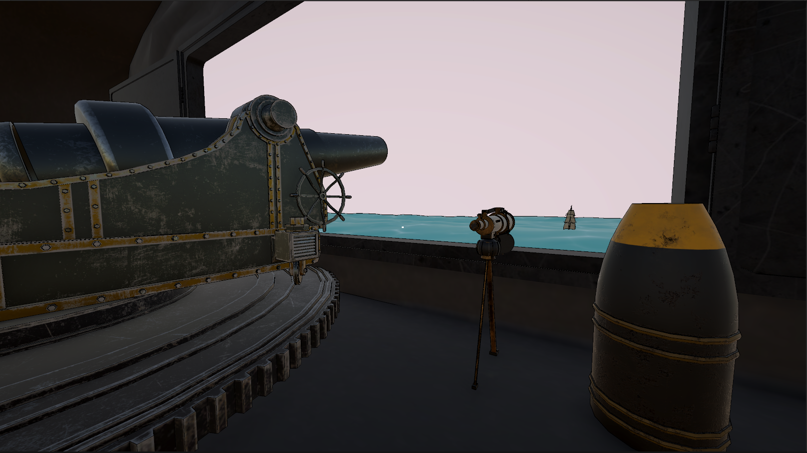

Artillerie Lourde fue un proyecto escolar donde nos juntamos la clase de DAM videojuegos (código y backend) y la clase de A3D (modelaje y visuales) para crear un simulador 3D.
En este proyecto me encarge del rol de "Technical Artist", asegurándome de que las creaciones de ambas clases pudiesen combinarse dentro del juego.
Mediante la creación de shaders y configurando la Universal Render Pipeline (URP) de Unity, me dedique a conseguir la mejor performance posible manteniendo un estilo visual atractivo.
En este proyecto me centré en aprender cómo funcionaban las diferentes fases del renderizado 3D en un motor gráfico, y en base a eso cómo funcionaban los shaders y cómo modificaban este renderizado.
Uno de los primeros conceptos que apliqué fue el de Vertex Shader. Una de las primeras fases del renderizado 3D consiste en obtener la información de cada objeto visible dentro de la visión de una cámara, concretamente los vértices de los que están compuestos todos estos objetos. Un vertex shader tiene la capacidad de modificar esta información antes de que pase a las siguientes fases del renderizado, de manera que puedes seleccionar los vértices en base a un criterio, y modificar su posición en base a ello.
En este proyecto se utiliza un vertex shader para generar de manera procedural el océano y su movimiento, y hacerlo de esta manera permite cosas como controlar detalladamente la frecuencia y altura de las olas, y hacer que ciertos objetos, en este caso los barcos que hay que derribar, se muevan en base al movimiento de las olas por el océano.
La siguiente fase fundamental de cualquier motor de renderizado 3D es la rasterización. Esta consiste en coger todos esos vértices previamente mencionados y convertirlos de ese espacio 3D inicial al espacio 2D de la pantalla. Esto, de manera resumida, se calcula multiplicando diversas matrices 4x4, donde se transforma, en este orden:
De espacio de objeto → a espacio global → a espacio de cámara → a espacio de pantalla.
El espacio local es la posición de cada vértice respecto al centro del objeto, el global es la posición del vértice en el espacio 3D, el de cámara es la posición del vértice desde la perspectiva de la cámara (es decir, la distancia entre vértice y cámara) y el espacio de pantalla, que transforma la posición de los vértices en píxeles de la pantalla. Uno de los motivos de pasar de un estado a otro mediante matrices es que se puede revertir el cálculo, es decir, si tienes la información de los píxeles de la pantalla, y la matriz de transformación que se usa entre espacio de pantalla y de cámara, puedes calcular los vértices en posición de pantalla, y así hasta el inicio del proceso, en espacio de objeto.
Otra parte importante del renderizado de objetos 3D se denomina el problema de visibilidad. Este explica que, dados 2 vértices que ocupan el mismo espacio de cámara, hay que buscar una manera de decidir cuál de los dos se renderiza. Para esto, en los inicios del desarrollo de renderizado 3D se crearon soluciones como el algoritmo del pintor, que simplemente renderizaba cada vértice, y si encontraba otro que ocupaba el mismo espacio, este sobrescribía el valor del primero (lo que se conoce como renderizado back to front). Pero al ver que esto era poco eficiente, se creó un sistema que sigue siendo la base del renderizado 3D en motores de videojuegos a día de hoy: el Depth Buffer.
El Depth Buffer, o Z-Buffer, es un valor que se asigna a cada píxel en base a la distancia del vértice respecto a la cámara. En base a esta distancia, si dos vértices ocupan el mismo espacio en la pantalla, solo se renderiza aquel que tenga un valor más bajo en el depth buffer (significando que está más cerca).
El último punto fundamental del render de objetos 3D es el Fragment Shading. De lo que esta fase se encarga es de, una vez tienes los datos de cada vértice y los píxeles que ocupa en la pantalla, calcular cómo se renderizan, cómo se "dibujan", los objetos. Para esto se tienen en cuenta una gran cantidad de factores, como el material del objeto, la iluminación de la escena, los ajustes gráficos del proyecto (en este caso, de la Universal Render Pipeline de Unity), etc.
La mayoría de shaders afectan y calculan esta tercera fase del renderizado, el Fragment Shading, y en este proyecto su uso principal es la creación de efectos de postprocesado. Un efecto de postprocesado consiste en, una vez tienes la información final de cómo se renderiza una escena, añadirle una especie de filtro, que puede modificar cómo se ve el resultado final de muchas maneras. Algo a lo que le dediqué semanas y que realmente mejora el estilo visual del juego fue un Outline Shader.
Este lo que hace es, mirando cada píxel de la pantalla, comprobar si la diferencia de profundidad (distancia del píxel a la cámara) o la diferencia de normales (la dirección hacia la que mira el vértice) entre los píxeles adyacentes supera cierto umbral o no. Esto significa que de cada píxel, mira los 8 que tiene al lado, y compara la diferencia de sus valores mediante Sobel Weights (matrices 3x3). Si el resultado de multiplicar esas matrices por los píxeles supera cierto valor, se pinta de negro ese píxel, y cuando se aplica esto a todos los píxeles de la pantalla, genera un efecto de Outline.
A modo de conclusión, este proyecto me fue super útil para aprender la base de cómo se renderizan los objetos 3D, y creo que aprendí cosas que me han sido y me serán muy útiles a la hora de desarrollar videojuegos.